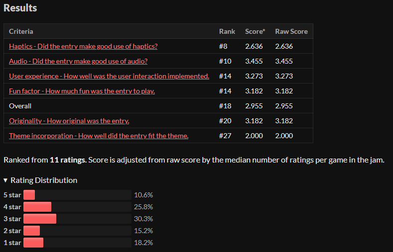
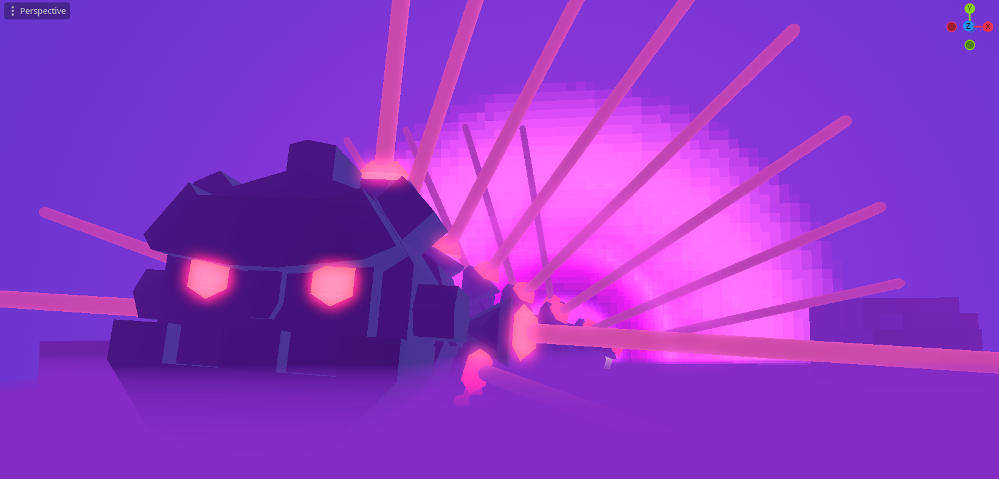
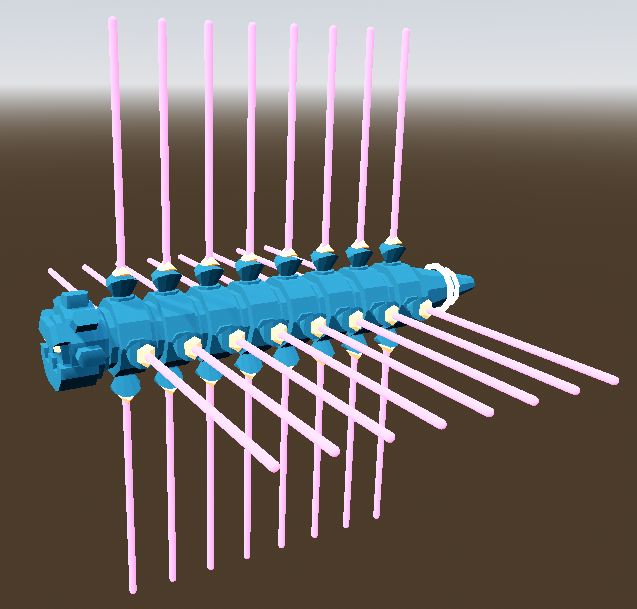
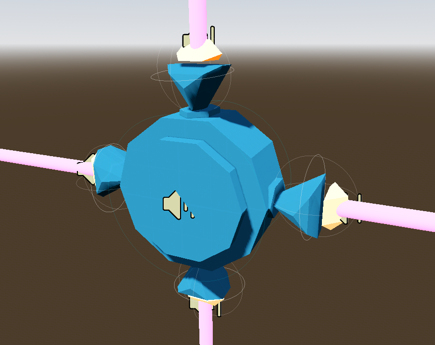
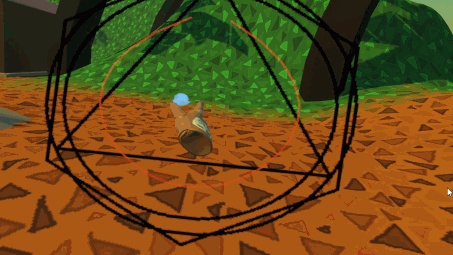
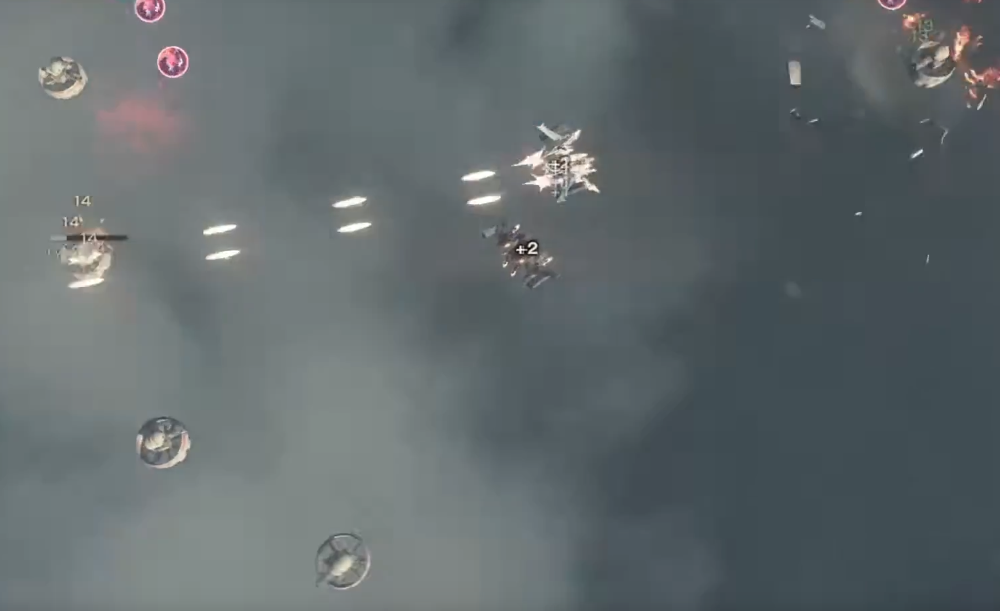
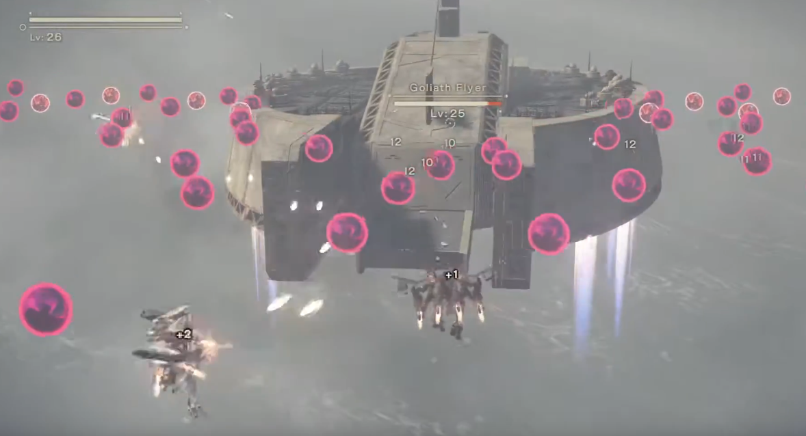
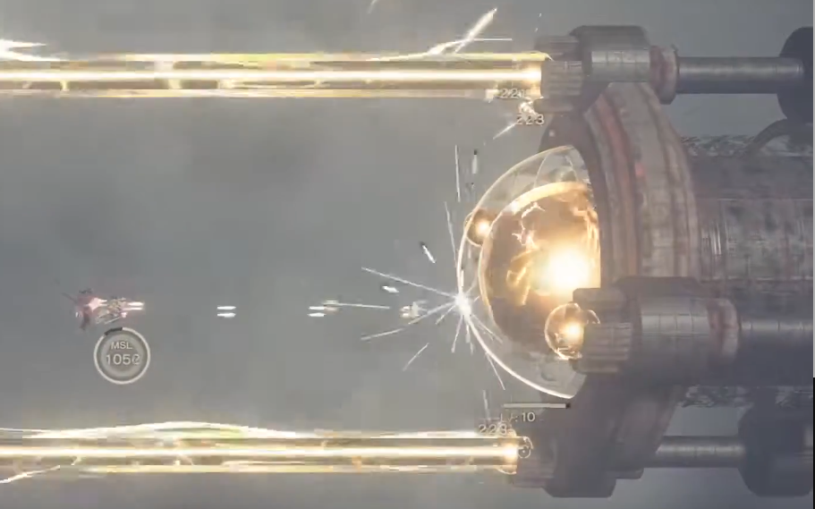
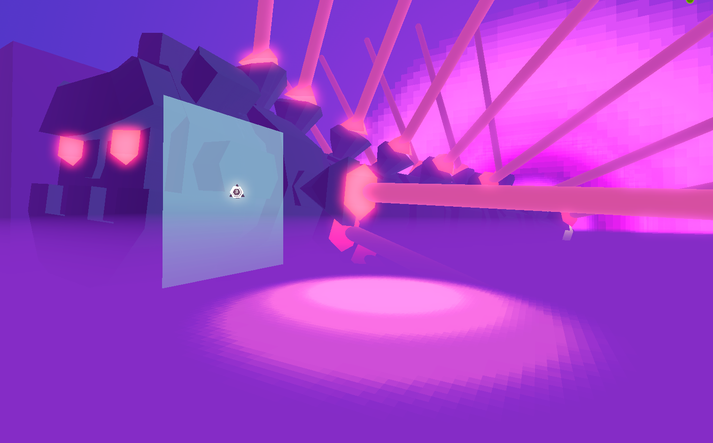
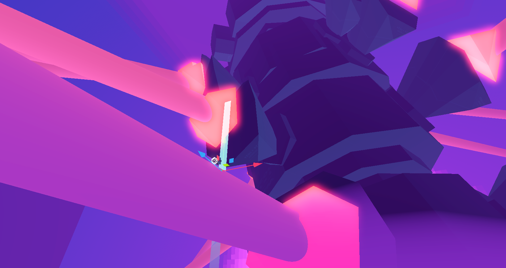

I push buttons, and I make free + open source virtual reality games
Table of Contents
- Welcome to the Yap Zone
- Tech Breakdown
- Things that didn’t make the cut, and next steps
- Spell Casting
- Godhand
- Ship Position Projection
- Post-round store
- Relics and Enhancements
- Other Ship Designs
- Postmortem
- Ship mechanics
- Audio
- User Interface
- Levels 1 & 2 (Scrolling Levels)
- The Boss Fight
- Developing in Godot
- In summary
- Closing thoughts
Welcome to the Yap Zone
About this writeup
The post-game analysis is broken up into 2 sections:
- A tech breakdown, discussing the implementation of in-game features
- Info-dumping about notable things that I wanted to add, but didn’t have time (cut content and next steps)
- A postmortem analysis of the game and its implementation
Feel free to only read the parts that interest you - this document was made as means to reflect on my work post-jam, so some sections may not be interesting or relevant!
[!Tip] Github offers a table of contents in the top right of the page
About the Game
Solar Automaton is a simple bullet-hell, inspired by Nier Automata’s flight unit sections.
My main goal with this game was just to make and release something using Godot for VR. I’ve had my eye on it for a long time - partially because of Unity becoming enshittified lately, partially because I prefer to use open source software when possible.
As mentioned, the game takes a lot of inspiration from Nier Automata. After watching the anime, I decided to give the game a second playthrough. Still an absolute masterpiece to this day - the intertwining plots, the point and counterpoint narratives comparing the androids to machines to humans - even the tutorial is fantastic! Platinum Games makes a killer ARPG to begin with, but put together with Yoko Taro’s worldbuilding is total perfection.
I recall there being a game made by Valve or Oculus with a similar concept, but I was unable to find it when I looked. It was the same kind of bullet-hell gameplay, where you view the ship from a god-perspective, and your ship follows the transform of your controller.
Somewhere between Nier Automata and this mystery bullet hell VR game is the gameplay inspiration for Solar Automaton.
About the Jam
Solar Automaton was made for Godot Game Jam February 2025, which lasted 7 days.
In the end, I ranked 18/27, which I’m pretty satisfied with given that the gameplay was very simple, and I intentionally ignored the theme of the jam. Could’ve been better, but getting a good ranking wasn’t the point of joining the jam!

Topics of Interest
My main point of interest was to just ship something in Godot. Optimally, I’d like to switch to Godot for my side projects completely if the engine ends up checking all of the boxes for me, so this was just meant to get my feet wet.
The project itself is fairly simple by design - no hugely complex systems like my previous game jam projects. The game is broken up into 3 levels: 2 short auto-scrolling levels, and a boss fight level.
Tech Breakdown
Player Mechanics
The player has a limited range of interactivity in the game - they pilot a ship from a third person perspective. The ship lerps to the player’s hand at a set speed (not too slowly to make dodging too easy, but still fast enough to not feel sluggish).
So, the ship follows one of the player’s hands - we’ll call that the ship hand.
By pressing the trigger button on the ship hand’s controller, the player will shoot a trio of bullets in an automatic-firing pattern. No huge reason for 3 bullets instead of 1 or 2, it just looked cool, and it fit the design of the ship model.
By pressing the opposite controller’s trigger button, the player will perform a dodge. This swaps which hand the ship follows and grants a few frames of invincibility.
User Interface
While neatly polished, this UI is fairly simple. UI elements are used in the title scene (level selection, credits, tutorial), the pause menu, the “level complete” menu, and the “you died / game over” menu.
For interaction, the player has a pair of laser pointers on each hand, which can click on buttons in the UI. UI buttons trigger a haptic pulse and SFX on hover/press.
The UI is made up of Godot’s Control nodes, arranged via a series of HBoxContainer and VBoxContainer. The UI itself is displayed in 3D world space via XRTools’ Viewport2Din3D node.
Levels 1 & 2 (Scrolling Levels)
The Combat Zone Management system is my solution to the auto-scrolling levels shown in the first 2 gameplay scenes. The main objective was to be able to spawn levels in chunks for optimization purposes, and to avoid having things existing in the far ends of the level until I’m ready to actually use them.
They’re made up of a few main components:
- The Combat Zone Manager
- Combat Zone sections
- Simple meatball-firing enemies, which optionally followed a Curve3D at a given speed
- And some
Area3Dtrigger zones, used to dynamically adjust the level when entered by the player
The Combat Zone Manager
The Combat Zone manager was responsible for spawning Combat Zone chunks, and managing the speed at which they moved.
The Combat Zone Manager had a set of 3D Markers, which indicated where chunks should spawn from (behind the sun), and where levels should be despawned at once the chunk’s end marker had reached. The latter was done via a simple distance check, calculated from the chunk’s end marker to the manager’s despawn marker.
Combat Zone Sections
These were meant to be small sections of a level that could be rearranged, randomized, and reused to compose a larger scene.
These Combat Zone Sections had a few main sections:
- Static environment, which would spawn at the player’s spawn position
- Moving environment, which would spawn behind the sun and move towards the player based on a speed from the Combat Zone Manager
- And a set of markers, which would tell the Combat Zone Manager
- Where the moving environment should spawn
- Where the end of the moving environment is, so we know when to spawn the next chunk of the level
To move the dynamic section of the level, I added a Linear Mover node moving a parent node towards the player at a set speed. The Combat Zone Manager was responsible for updating that speed for each Combat Zone Section, since there could be multiple Combat Zone sections active in the scene at the same time.
Having a separation between linear and moving environment was really nice, because it meant I had a little more freedom with level design. Designing nice looking paths for enemies to follow was a lot easier when optionally decoupled from the movement speed of the rest of the level, which changed a fair bit during development.
Trigger Zones
I had a couple area triggers in the moving sections of the level, which would activate once the player entered them. These were nice for creating a more dynamic level - my favorite usage was to update the BGM’s intensity at impactful points of the level, to make levels feel a bit more dynamic.
The same trigger zones were often used to tweak the speed of the level. The second level’s tower structures were hard to navigate at high speeds, but there were also structures of both levels that went on for too long at slow speeds. A uniform per-level speed didn’t feel great, and so this system was created.
There were some enemies that would follow a Curve3D, placed either in the static or dynamic sections of a Combat Zone Chunk, which would get activated via a trigger zone. This allowed for some nice finely-tuned enemy patterns, a design I lifted straight from Nier Automata. You can see this in the first 2 enemy waves in the first level - it feels a lot more interesting than the simple static enemy layouts you find later in that same level.
The Boss Fight
When I was scoping the game, I knew I wanted to have a colossal boss fight. Scale is one of those things that hits extra hard in VR, My partner said it needed a name, and settled on Jim!

Worm Structure, a podcast by Hideo Kojima
Jim is made up of the head, 8 spine pieces, and a tail. To beat the boss, you have to destroy each of its 8 spine segments - upon doing so, it begins its “on death attack”. This attack starts a timer to mark the level as completed, and has the worm move along a dramatic winding path around the player before returning into the void.

Each spine component is its own Node, which has a set of 4 blasters, meant to resemble vertebrae. These could be shot and destroyed, preventing the worm from using it as means to damage the player. Each time the player destroys a vertebrae, the spine segment takes a small amount of damage. This was mainly put in place because it would be too hard to hit the spine column otherwise - since Jim is moving so fast and the spine segments are rotating, it’s a bit hard to hit the spine itself.

Locomotion
Jim moves along a set of Curve3Ds for its movement. Each worm component is moved along the curve by its own PathFollow3D node, each of which iterates the curve at a set speed. Godot’s PathFollower nodes are really nice, in that you can iterate the curve as a percentage from (0 to 1), or as a distance (0 to the max length of the curve) - I used the latter.
Attack Patterns
Jim’s attack pattern was made up of an informal finite state machine. Each attack was made up of:
- A set of
Curve3Dnodes that the worm could choose from (the same curve, re-positioned for variety) - Information about what attack pattern the worm would take (should it shoot meatball projectiles, or use the laser attack?)
- Information about how fast the spine components should spin (useful for the laser attack)
- Some timer information, for initializing the blasters on a delay (mainly for visual flair)
- And, a list of other attacks that the worm can follow up with (to prevent spamming the same attack type over and over).
How the battle changes over time
The fight overall is fairly static - I didn’t have a huge amount of time to give Jim the polish they deserved. As Jim has their spine columns destroyed, the fight changes in 2 small ways.
First, the BGM intensity bumps up a notch every time a spine column is destroyed, fading to a more intense version of the song (+10% intensity, starting at 50%) over a short duration. This is subtle, but it gives the fight an extra oomph.
Second, when enough of Jim’s spine sections get destroyed, his “Projectile” attacks also fire his lasers at the same time. It was a quick way to add a little extra danger mid-fight - one that I’m not very satisfied with for reasons I’ll get into shortly.
In comparison, The Masked Man’s boss fight in Shattered Skies had much more variance. The whole fight sped up as he took damage - he shot more projectiles during his spell cast attack, and he spawned more falling sky shards during his overhead portal attack. The overhead portal attack also lasted longer as he took more damage, so it would be an active threat as he continued to iterate over his other attack states.
The next time I make another boss fight (and have the time/spoons to get into it), I’d like to give it more variance like this.
Things that didn’t make the cut, and next steps
In an attempt to cut down on scope/complexity, I intentionally avoided animation systems, anything too physics-heavy, and complex enemy AI. I’ve played with the first two during previous whitebox tests of other games in Godot, but I ran into issues with implementing both in a way that functions/looks great (at least, to a comparable quality to what I can do in Unity with my current skillset). Enemy AI implementation on the other hand, is mostly engine agnostic, so an AI-heavy project would’ve been a waste of time. Maybe for the next one!
While there was a theme to the jam, I decided to just make the game I wanted to make instead. I played with a couple ideas for how to fit the “Enchantment” theme into the game, but they didn’t feel great with the bullet hell game - at least, not with the amount of iteration time I had to give it.
Spell Casting
Spellcasting was something that I figured could be a neat way to implement the “Enchantment” theme. It’s a partial fit - I felt like “enchantment” was more of something you applied to something else, rather than an action you took. Something more like Minecraft’s enchantment system, rather than the “cast fireball” type of magic you’d find in Skyrim.
But, it was something I considered nonetheless! I wanted to have a light version of the A VR Game about Magic, and Ducks in Cosplay’s magic casting system. In Cosplay Ducks, the player draws spell sigils as splines to select spells - for this idea, players would instead have a set of ~6 spheres evenly spaced out around the border of a spell plane, and the player’s selected spell would be chosen based on the order of the spheres they touch. Funny enough, this was implemented in another game for this jam, Keziah’s House!

I decided to cut this for the following reasons:
- While I had already started prototyping Godhand as a possible spell, I would also have had to make at least 2 other spells.
- I had a heal spell in mind, but this would be really difficult to balance in the limited time I had
- I have a big document of game design ideas I could have taken inspiration from, but ultimately at this point it was becoming a scope issue
- This was a solution to a problem that I did not yet have in my game
- I was concerned that drawing spell sigils would be too distracting or cognition-heavy in a bullet hell game as is.
- Maybe this would feel better if I slowed time for a moment when the player began to draw a sigil, but it would mess with the pacing
- I would potentially need to implement a resource system, to prevent the player from spamming certain spells
I’m not willing to rule this out as a cool game mechanic for this game, but it needs attention and time to be implemented well and properly. First and foremost, the spells need to be worth implementing, and should feature some kind of interesting VR interaction as part of its usage. This is mainly important to me, because I’m asking a lot of a player to strap a computer to their face in the first place. There’s a lot of steps it takes to get in VR, and the headset is often hot, heavy, and uncomfortable. As a result, gameplay needs to be short, snappy, and make use of interesting game mechanics. Otherwise, why not just make a pancake game instead?
Godhand
One of the features I prototyped and eventually cut was Godhand - comparable to the Mystic Hands mod for Blade and Sorcery. You would have a transparent hand on your off-hand that could punch and grab enemies, possibly also acting as a shield. Once dropped, enemies died after a short duration.
This could’ve been a neat way to implement the “Enchantment” theme to the jam - maybe the player was a mage or something, and the Godhand was one of the spells they could cast.
I ended up scrapping it for a few reasons:
- It would make the bullet hell a little too easy if the player could just turtle the ship with their hand
- I really wanted to have a colossal boss enemy, and I didn’t have a way for the Godhand to damage a large distant enemy
- Playtesting review
- It wasn’t intuitively clear that the hand was a tool the player could use.
- Depending on the enemy pathing, enemies were often too far to grab/slap. If I moved enemies closer, they would be too close to the player
- Time constraints / scope creep
Difficulty Balancing
I think with a little extra polish it could’ve worked with the game. Making the hand disappear for a bit if it took too much damage would’ve solved the issue of the player protecting the ship with the Godhand too much, although I got bogged down in the details of thinking of how to fit it into other systems (would there be a MP cost to casting Godhand? Is Godhand active all the time, or could the player cast other spells?)
Boss Interactions
I think Godhand could’ve been usable in the boss fight if I spent a little more time thinking about it too - there could’ve been smaller enemies that spawn in waves during the fight. Maybe the player could’ve grabbed them, and thrown them at the boss enemy, dealing AOE damage in the death explosion.
Ship Position Projection
One mechanic that I really liked in Nier Automata’s flight unit parts was that it was made up of smaller set-pieces, breaking up combat in different ways. Enemies came at you in waves, moments were broken up with dialog, and there was often something interesting happening in the background.
It was really cool how they framed some combat sections differently, to frame combat in a different way. For example, in this very blurry YouTube screenshot, the combat is in a top-down point of view:

Later on in the same scene, combat switches to a forward-facing point of view:

Shortly after, it takes on a side-scroller point of view:

The camera positioning is very dynamic, and changes to frame the fight better, based on what’s going on in the scene (what enemies the player is fighting, what’s going on in the background, where is the player going). This is a fun challenge in VR, given that the player has full freedom of motion in 3D space - both in their HMD and controllers.
By default, the ship lerps its transform to match that of the player’s hand. The idea I had in mind, was to have a system that would instead lerp the ship to a point on a line or 2D plane that I could move around in 3D space. This system would be activated either via a trigger collider (in the case of a scrolling level), or via certain attack patterns (in the case of a boss fight).
The below images show what this could look like - the ship’s would lerp to a position projected onto the light blue plane/line at certain times in gameplay.


I figured that this would make certain sections of the game stand out more - maybe during the sections where the worm does a humpback whale breach attack to the side of the player, the player would have their motion projected on a plane
There would definitely have to be some UI and SFX cue, to let the player know that their movements are being restricted. Playing a jingle and pulsing a brief particle at the ship’s position on the target space would probably do the trick. The ship already is set up to lerp to a target position every frame, so nothing special would be needed to transition the ship to this new space.
Post-round store
I’ve been playing too much Balatro lately, and I was tempted to add a similar store that would show up at the end of each level. Enemies would have a percentage chance to drop some denomination of currency on death.
The store mainly was meant to serve 3 purposes:
- Give players a bit of rest (cognitive, and physical gorilla arm) between levels
- Fulfill the theme of the game jam, by letting the player enchant their ship with purchased boons
- Add a little risk/reward spice, and depth to the game
This would’ve also tied into some mechanic for healing the player - maybe health would persist across levels, and healing would be tied into the currency system.
That said, this is a dangerous system to add because it would mean that there would have to be enough game content to support longer runs. If the player were to keep playing long enough to get a monetary upgrade, there would need to be enough content to actually play for/with those upgrades. Do-able, given that I had a system to spawn CombatZone sections in chunks (and therefore could create many semi-unique stages at runtime with randomized layouts), but overall too far out of scope for what I wanted to make.
Worth noting however: One piece of feedback from the jam comments was that the player found there was little reason to actually fight enemies - they decided to just dodge enemies instead. Adding a score/currency system would incentivize players to fight, rather than just stay alive. I’ve heard before that given the opportunity, players will try to optimize the fun out of a game, and I believe this to be the same root cause. It’s the designer’s job to encourage the player to engage with the mechanics of the game, and this would be one way to do so for this title.
Overall this got cut for scope reasons. Fun stuff to think about, but not do-able in a week given that there’s other things that were more important.
Relics and Enhancements
This was my initial response to the “Enchantment” theme of the jam - the player would be able to somehow use a set of powerups that would change the way that they fight. These enchantments would take the form of a relic that you would equip, or maybe a temporary power-up that enemies could drop.
Here’s some ideas I wrote down for potentially interesting power-ups:
- Different blaster types, which would replace the ship’s default blaster, each with a different fire pattern and fire rate
- A shotgun, machine gun (increase fire rate over time until overheat), or laser gun type
- A sword/spear attachment like Nier Automata, that cut enemies directly in front of the ship if the ship is moving fast enough. Maybe a greatsword, that made it hard for the ship to get rid of its intertia
- Various abilities that would be used with the off-hand’s trigger button, which would replace the dodge ability
- A one-hit shield, which maybe could only be briefly triggered (more of a parry than a block)
- An AOE attack that would freeze all enemy bullets in a given space, then force them back to their sender (or the nearest enemy)
- A laser blast, that would fire from the ship in the direction of the off-hand’s position
- An attack that would fire a sticky bomb, which would detonate on the subsequent trigger button press
- A charged heal, which would slow the player to a crawl
- Stat buffs which lasts until you take damage (eg: fire rate, damage)
- An enhancement that dealt more damage if the player fired a bullet on the beat of the music
These were all cut for various reasons, most of which were cut for scope reasons. Some of these ideas fit into the mold of “spells which would be used by the spell casting system”, but that’s another feature for a different game.
Other Ship Designs
This was something that I briefly considered as a sort of “new game +” feature, but scrapped for scope reasons. The player would be able to pick from a set of alternative ship designs before a mission, each with bespoke interactions. Kinda like in Cobalt Core!
This is something I didn’t spend a huge amount of time on, because I quickly dismissed the idea for scope reasons, but I have some notes written down about a second ship that had 2 body nodes instead of 1 - the player would pilot one with each of their hands. When the player is not firing their guns, a laser beam would be firing through the two of them, functionally turning the ships into something like Darth Maul’s lightsaber.
Maybe the default ship would be the only one with casting abilities - this was around the time when I was still implementing Godhand on the main ship, so that was still a thing at the time.
This could’ve been a cool feature to add a little extra replayability to the game, but overall would’ve taken too long to implement as is.
Postmortem
Ship mechanics
Controls
I got good feedback about the controls for the ship, even though it was fundamentally pretty simple. I think that adding too much complexity to the player’s action space would make the game too difficult (bullet hells are naturally cognition heavy, so giving the player too much to think about was something I was cautious about). Looking at Nier Automata for comparison, the player has more options to attack with (the player also has a sword attack and a heavy blaster attack), but the game also takes place on a 2 dimensional plane at all times.
The dodge was pretty much thrown in at the end - I had the idea to throw it in pretty early on but I didn’t wanna commit to it until I had figured out some other things (what does the player model look like, what abilities do they have?). Since the player model got thrown in super late into the jam, the same thing happened here. As a result, it’s functionally solid, but it’s not really clear what’s going on. The ship should flash its opacity/albedo while the invincibility frames are active, and the model should do a barrel roll instead of simply lerping to the opposite hand.
Cut Content
I’m still a bit disappointed about not being able to fit in the ship projection system, which would have projected the player onto a different space during pre-defined sections of combat. It really switches things up in Nier Automata, and it functionally is not very difficult to implement - especially since I had designed the “ship follow” functionality with it in mind that this would probably make it in the final game. Given a little extra time, this would be high up on the list.
The Good:
- Simple and well polished
The Bad:
- It’s not very clear when the player has invincibility frames, either coming from the dodge ability, or from getting hurt
The Neutral:
- There’s a lot of room for cool next steps, and that’s a bit of a neutral point! It would have been really fun to get to play with more features for the ship, but that would come at the expense of other parts of the game, all of which needed the attention they got.
Audio
All of the audio in this game (aside from the announcer’s voice) came from Ovani humble bundles. It was nice to switch up the audio situation, since I usually just use whatever I can scrape together from creative commons audio! I’m always a little unsure about whether or not I’ll use some assets I buy (especially in the big humble bundles where I got the audio for this game), but it ended up being very impactful.
The Ovani Music Plugin specifically added a lot of juice to levels, since I could easily fade into a more or less intense version of the same song to fit the mood of the game. It was super easy having BGM that looped (while having a bespoke intro section), and so was transitioning into new songs.
I added a quick SFX system that could play a random SFX clip, with a random amount of pitch variance - that ended up being great for adding a little variance to prevent the same audio from playing over and over. Funny enough, I got that same negative feedback about the player’s blaster SFX being too grating - so some tweaking of SFX volume levels was still needed. Adding a volume slider to adjust audio bus volume was quickly dropped from the “would be nice” pile to the “I don’t have time/scope for this”.
One thing that would’ve been nice, was to re-implement the SFX Manager system that HurricaneVR offers in Unity - you can easily request the SFX Manager to play a given SFX clip at a given world-space transform, from any script with a single line of code. This would’ve cut down on the number of AudioStreamPlayer nodes I attached to the worm, but I suspect there wasn’t a huge performance hit there. More needless complexity that would have been nice to work with, but ultimately wasn’t worth the hassle to develop (especially since I realized it would’ve been nice closer to the end of the jam, when SFX was already widely implemented already).
User Interface
I’m pretty satisfied with the UI as well, even if it is pretty simple. The UI felt polished - there’s a juicy haptic pulse and SFX that plays whenever you hover/click a button. Quick and dirty, but it gets the job done.
There’s lots of room for improvement of course - the whole laser-raycast UI system as a VR interaction method feels dated, but it’s also the easiest to throw together in a short amount of time. I could also have done a poke-based UI, but I wanted to avoid having to move my UI elements around to be reachable. An easy problem to solve, but cutting down scope wherever possible was really important for this project.
If I had a little more time, maybe something a bit more diegetic would’ve been cool - maybe I could put a ship in the title scene, and the player would have to shoot buttons to trigger them. This doesn’t work at all in the pause menu for technical reasons - the whole scene tree is paused, to prevent the player from cheating and moving the ship out of danger while the game is paused.
The tutorial is done as a quick menu in the title screen, which is pretty gross. There’s not a huge amount of complexity in the input space, so it’s not a huge faux-pas, but there’s a lot of room for improvement here. The tutorial should be integrated into the first level as a first-time user experience thing, and the tutorial info should be visible in the pause menu. I had thoughts about the prior solution during design time (something along the lines of floating text similar to the “ready / go” text), but it was cut for scope reasons.
The Good:
- The UI does everything I needed it to
- It has a solid amount of polish built-in
- Making new menus was really easy, once I had a template down
The Bad:
- I don’t love the laser-pointer system for button interaction. Changing this is very much a “next steps” thing
- Implementing the tutorial as a UI window in the title screen is not great for new players
Levels 1 & 2 (Scrolling Levels)
The Combat Zone System, while over-engineered for the scale of this jam, was a nice system for level design. Having a separation between static and moving environment made many things easier - designing enemy movement patterns, and tweaking the pace of the level (BGM intensity, and movement speed of levels).
There’s room for further level composition, in that I could compose levels at a small scale - a single enemy or level interaction at a time. Currently, level chunk spawning is very simple: levels are spawned in a linear order, authored at design time. There’s room to easily build off of this to make longer, more randomized levels, depending on the design requirements of the game as a whole (eg: randomized levels would be better suited for a roguelike).
I say that it’s over-engineered, because I didn’t take advantage of chunk-based level composition at all in the levels I made for this jam - both of the scrolling levels were made up of one large chunk! Originally, I only had 1 large level that was made up of the 2 scrolling levels one after the other. During playtesting, I found that it was too hard to clear a level if it was too long - mainly because I don’t have any healing mechanics built into the game. If I wanted to have longer levels, I’d either have to make levels easier (not very fun!), or add some way for the player to heal in a somewhat reliable way (scope!). In the end, I decided to trim the levels down - it felt a lot better for the scale of a jam, especially since it was very important to me that players didn’t rage quit before they got to see the boss fight!
The Good:
- Level design composition was really easy at design time (enemy movement patterns, level pacing)
- Expanding on level composition is really easy, if I wanted to make more levels
The Bad:
- Enemy layouts could have been more interesting - static enemy layouts weren’t very interesting or challenging
The Boss Fight
The boss fight felt really cool - when Jim the Worm emerges for the first time, it’s a big “oh shit” moment. The BGM kicks up intensity right when Jim pops out, and continues to ramp up as the player destroys each of its spine segments. Once the player destroys the last of its spine columns, the worm has a dramatic flight around the player, before returning to the void from where it came. I’m very satisfied with the way that it turned out - it’s really cool, especially given that it was cobbled together in the final days of the project (I think I started working on the worm on Friday, with the jam ending on Sunday evening?)
That said, there’s many things I’d like to tweak in this fight. In general, I think I overscoped in this project! Spending a whole day on polish mid-jam added a ton of value to the end product, and I wish I gave myself enough room to do the same to the worm, which was implemented the following day.
Jim’s curve pathing was hastily arranged.
- The curves could’ve used more attention so that their pathing feels more natural, and better spaced out.
- One of their “rise to the sky” attacks is way too close to the player. More playtesting was needed in general
The attacks don’t feel great
- Because I duplicated the “humpback whale breach attack” curve for usage in 2 attacks (one firing meatball projectiles, the second firing lasers), the player ends up functionally seeing the same-ish attack often.
- Some of the laser attacks don’t feel very fair to the player, mostly due to the laser not being very visible below the fog layer. The 2 patterns that come to mind are the “rise to the sky” attack where the laser comes seemingly out of nowhere, and the right-side “humpback whale breach” attack where the lasers are spinning in the wrong direction (the lasers emerge from the fog, instead of rotating above and around Jim)
- The divebomb attack is functionally not very threatening. This should be very intimidating - maybe Jim needs to spawn shock waves or many projectiles as they dive?
The battle is too static
- Jim’s attacks don’t change enough as the battle progresses. Either Jim needs to get faster as they take more damage, they need to spin faster during the laser attacks, and they need to fire meatball projectiles faster.
- Jim needs more attacks they can use as they take more damage
- Maybe an attack that spawns trash mobs, that move along a simple curve in front of the player?
- Maybe an attack that spawns falling hurtboxes, similar to The Masked Man’s boss fight
The Good:
- The BGM hit really hard in this level, especially when the worm emerges for the first time.
- The boss fight is really cool at scale, especially coming out of nowhere after the first 2 levels
- The worm’s segmented movement worked really well
The Bad:
- The attack pathing needed more attention at design time to not feel repetitive
- Some attack patterns feel unfair, and some feel completely unthreatening
- The fight overall needs more variance. More unique attack patterns/paths
- The boss needed more flair during its “on death, return to the void” pathing
Developing in Godot
I have a handful of scattered thoughts about Godot, GDScript, and XRTools - I’ve broken them down into smaller sections for easier reading (and rambling).
Typeless Languages
I stuck to GDScript for this project, even though I’m most closely familiar with C# in the context of Unity. I figured it was best to stick to the canon language until my feet were wet.
I don’t mind GDScript for quick and dirty scripts. Since Godot closely embraces Composition as a design pattern, I see a lot of small scripts in this project’s code base. For example, the announcer’s code is a set of simple “play SFX, wait for a second” over and over. Getting a bunch of small scripts like this knocked out quickly was really nice.
I really don’t like typeless code, but that’s mostly a personal preference. I don’t like assumptions that require a little extra brainpower to parse, in the interest of easier written code. While it’s nice that I can declare a variable with a type indicator like below, it feels like it’s wasting the effort that using the var keyword is trying to save. This is a nitpick!
var my_int := 5
var my_int_1 : int
Node Paths
On a similar note, I don’t like being able to access child nodes by name, like below:
$Mesh.visible = false
$OnDamagedSFX.Play()
This usually isn’t a problem, but once you start messing with the name or hierarchy of an established scene, things start to break really quickly.
This became a problem for me while trying to record some gameplay footage - I wanted to have a second camera rendering the game to the desktop, which would have its motion smoothed. The solution to getting a second camera rendering a different image to the desktop (instead of rendering to the HMD) was supposedly to place the VR camera as a child of SubViewport node, and mark that SubViewport as UseARVR. By re-ordering the camera, I ended up causing a runtime error, because XRTools’ xr_rig script was trying to access the camera by name, instead of by having a reference to it in the inspector (or some kind of GetComponentInChildren() equivalent).
Easily fixable, but not something I should have to fix! In the context of what the script was actually doing, it didn’t really matter where in the hierarchy the camera was! I think there needs to be a separation between where a node is in the hierarchy / what the node is named, and the way that node is referenced in code.
Private Variables
One thing I do mind, is that I miss having private variables! There‚Äôs often some variable that I need to keep at an object-level scope, which is just noise outside of the context of that object. I need the ability to say ‚Äúhey this variable exists, no you can‚Äôt read it, and no you absolutely cannot overwrite its value because that‚Äôll fuck with what I‚Äôm using it for‚Äù. Yes I can add an underscore in front of my variable names as a ‚Äúpretty please don‚Äôt touch this ü•∫‚Äù, but that‚Äôs a only a suggestion.
XRTools interactions
My current project is comparable to Shattered Skies, in that it emphasizes physics melee combat. The physics interactions are made super easy with HurricaneVR, which has made its way into the heart of the past 5/12 games I’ve made. Absolutely adore it. At the moment, Godot doesn’t really have anything like it (at least until XRTools 2.0 releases).
As a side tip, if a good asset costs $50 on sale, and it would take tens to hundreds of hours to do it yourself, $50 is an absolute bargain. I can’t recommend HurricaneVR enough, if you’re making VR games in Unity.
It’s been a hot minute since I tested out XRTools for VR interactions (so take this all with a grain of salt), but there’s a couple things I didn’t love about them:
- In Godot today, physics hands, and held pickables clip into static environment
- Physics grab interactions don’t seem to exist (yet)
- This would be something like Blade & Sorcery or Boneworks, where the interactable object is physics jointed to the hand
There’s also a couple wishlist items that are really nice in HurricaneVR that I don’t see in XRTools today:
- Stab interactions: Stab a sword into a rigidbody, and it gets stuck via a physics joint. The player can pull the sword out, with some effort
- Line grabbing: In Blade & Sorcery, the player has a 2-handed grab interaction with spears/mauls, where they can hold the trigger and have their hand slide along the length of the weapon’s shaft
- Half Life Alyx distance grabbing
Overall, I really like what XRTools comes with out of the box. I’m really looking forward to how the library shapes up over time, and I think I could see myself switching from Unity to Godot+XRTools eventually. I plan on giving XRTools another test pass once 2.0 comes out, to see if it’s viable to switch over.
Godot Physics
Usually before a game jam, I have a few ideas that I wanna implement - a jam is often just means to force myself to sit down and complete a project. Sometimes I do the whiteboxing of an idea beforehand, to see if something is do-able and/or fun, before sitting down in a jam to do it again in a cleaner way.
I had 2 ideas in the weeks leading up to the jam that I gave a shot:
- A game about using nunchucks
- A game whose gameplay was comparable to Arctic Eggs (the player holds a frying pan, moving and flipping stuff around a pan to cook it)
Both ideas were not suited for Godot for a few reasons.
The nunchuck idea is something that I whiteboxed in Unity a few years ago - made by attaching a simple SpringJoint to a pair of Rigidbodies. Fundamentally nothing too different than the grappling hook I made for Tall Walls. This didn’t work out in Godot because it turns out there’s no implementation for a 3D Spring Joint! Godot has a Generic6DOFJoint3D (its version of Unity’s ConfigJoint) - but I just wasn’t able to get it to act as a spring joint. Tried to read the documentation, but the terminology used in the property descriptions was going over my head. Wasn’t able to find any great videos talking about how to configure the spring joints, and I’m not about to ask a random number generator to explain/write the code for me - so it’s on the backburner for now.
The latter is fundamentally pretty simple, and should’ve been pretty easy to implement. After all, Arctic Eggs was also made in Godot, so it’s very likely I was missing something! After switching to Jolt physics and bumping up the physics tick rate, I did get better results, both with collision detection and in an overall reduction in jitteryness, but the results were still not great. I was still getting some gross clipping between the held frying pan Rigidbody, and the Rigidbodies I was trying to cook in the frying pan.
Given that the kind of game I’m most interested in making would be something comparable to Blade & Sorcery or Boneworks, the engine needs to have solid physics for me to work off of. It was a bit frustrating that the systems failed me this time, but it’s also likely that I’m approaching the problem the wrong way. With Jolt becoming the canon physics engine in Godot 4.4, I think there’s some good potential coming down the line. I’ll continue to play with it, and maybe things will click next time.
In summary
What went well
The game feels a lot more polished than some of my earlier games - I made sure to spend a whole day (Friday), solely working on cleaning up the game, which really paid off. The two main things I focused on polishing were the audio and haptics in this jam, both of which turned out fantastic.
I really loved the environment from this game, especially since it’s made up of a lot of really simple elements. The skybox + sun/portal environment elements looked fantastic, and the level composition being made up of cubes made iteration super easy. The cubes ended up looking pretty cool peeking out of the fog, which was a nice bonus!
There were 3 custom models (the ship, the small enemy, and the worm boss) - all of which were made from kitbashing some interesting shape primitives in blender. No UV work, all color variance made from assigning a different model to certain faces. Very quick and dirty, but they looked pretty great! I really like the design of the small enemies, and the worm design had a great impact, given how quickly I was able to model it.
What didn’t go well
I still wish I spent more time closer to the end of the jam on playtesting, but I’d be saying that regardless of how much playtesting I put in. The auto-scroling levels served as a good warm-up to the boss fight, but the level composition and enemy layouts left a lot to be desired. The worm was very cool and impactful as a colossal boss, but had many functional issues that often made the fight either unfair, unthreatening, or slow.
The game itself serves as an interesting prototype, but in general, I have trouble recommending other people to play it - I just don’t thing the game itself is very interesting, outside of the boss fight! This is mostly an issue of me setting out with the goal to create a game in a new engine, rather than to make something interesting. I had many ideas for how to solve this problem, but ultimately decided to focus on picking a smaller number of easier features (a cool auto-scroller framework, a cool boss fight, cool audio and haptics), polishing them as best as I had the time and spoons for.
This really became an issue when it became time to write up the itch.io description page, since I didn’t really have much interesting to talk about for this game - it was made in Godot! And it was a completed project! Very cool and good for me, but there’s nothing to market here! I even named the project pretty last minute, since for the whole time I was developing it, I was thinking about it as “the bullet hell with the worm boss”. The next project will have to have some marketing built into my dev cycle - making sure that I actually have something worth showing off is a good marker for whether or not the game is work playing (or making) in the first place. Some advice I’ve read on bluesky (in another context), is that you should be thinking early on about what you’d write in the Steam description page, and what you’d show off in the game’s trailer - both things that I didn’t really think about for this game.
I still plan on showing off this game, and it’ll still go on my portfolio site, but I still have many thoughts about this game in general (in case it wasn’t clear by the length of this page lmao).
Next Steps
In a brief mostly unordered list, these are the things I’d like to give more polish to:
- The player needs more interesting interactions, which take advantage of it being a VR game
- The boss fight needs more polish
- Scrolling levels need to be longer, with more polish on enemy pathing and level design
Closing thoughts
Overall, I’m happy with the way this project turned out - my end goal was to make a VR game in Godot, and I did that! Having a jam’s time limit is really nice for getting kicked into gear to finish and publish a project, despite the burnout it provokes. As an end result, I feel a lot more comfortable with using Godot for VR - and this game looks a hell of a lot better than the first 2 things I whiteboxed in the engine.
In terms of the finished product, I don’t think it’s a very fun game, and I don’t think it’s worth playing, and I’m ok with that! I have many thoughts about what the game could be, but that wasn’t the point of doing the project in the first place was.
Godot’s a cool engine, and I found myself enjoying it more as I used it more. At some point it felt like it clicked, once I started engaging with it on its own terms. I don’t know if I’ll keep using GDScript as a primary language, and I won’t be switching to Godot full time yet, but I’m glad I spent some time getting used to the engine. I’m still donating to the Godot foundation, and I’m happy to see that’s already paying off. I have high hopes for what the engine will grow up to be, and I will continue using it here and there, alongside the usual Unity stuff.